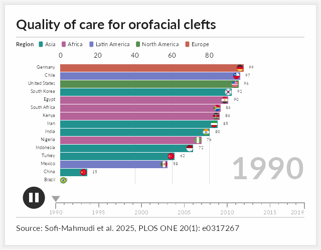

Presentation quality charts built on ggplot2 that the package itself does not provide. The first is a bar chart race: an animation of a ranking that changes over time, of the kind used to summarise long panels in talks, teaching material and journal supplements.
Every frame is an ordinary ggplot object. Nothing is hidden behind a separate rendering engine, so a frame can be inspected, modified or saved on its own.

Installation
# install.packages("remotes")
remotes::install_github("choxos/ggextreme")Writing output requires an encoder: gifski or magick for GIF, av or an ffmpeg binary for MP4. Images on the bars require magick.
Usage
ggrace() takes long data with one row per entity per time point, and three bare column names for the value, the label and the time.
library(ggextreme)
race <- ggrace(
clefts_qci,
value = qci,
name = country,
time = year,
top_n = 15,
duration = 15,
title = "Quality of care for orofacial clefts",
caption = "Source: Sofi-Mahmudi et al. 2025, PLOS ONE 20(1): e0317267"
)
race_frame(race, 200) # one frame, as a ggplot
animate_race(race, "race.mp4") # draw every frame and encodetime may be numeric or a Date. Each entity and time pair must appear once; a repeat is an error rather than a silent average. The encoder is chosen from the file extension, and frames are drawn across cores by default.
Selected arguments:
| argument | effect |
|---|---|
top_n |
number of bars visible at once |
duration, fps, end_pause
|
length in seconds, frame rate, hold on the final frame |
swap |
seconds a bar takes to move into a new rank |
palette, breaks
|
bar colours; gridline positions |
label_value, label_time
|
formatters for the bar numbers and the time label |
images |
pictures placed at the end of the bars |
timeline, play_button, card
|
optional chrome around the plot |
width, res
|
output size; the layout scales with width
|
Images on the bars
images takes image file paths named by entity. Pictures are cropped to a circle and right aligned just inside the end of each bar; entities without an image simply get none. A circular flag for every ISO 3166-1 country, plus Kurdistan, is bundled, so country races need no extra files.
key <- unique(clefts_qci[c("country", "iso")])
flags <- setNames(race_flags(key$iso), key$country)
ggrace(clefts_qci, qci, country, year, top_n = 15, images = flags)Any image works, not only flags. Pass paths to logos, portraits or crests in the same way.
Design notes
Three choices govern how the animation reads. They are set out in full in vignette("how-the-animation-works").
- Values are interpolated on a uniform time grid. Bars grow at a steady rate, and unevenly spaced observations play at their true relative speed.
-
Rank is not interpolated. Every frame is ranked on its own values, and a bar that changes rank eases into the new position over
swapseconds. Bars therefore rest in place and trade positions in one short move rather than drifting for a whole time step. - The geometry is fixed. The label column has a constant width and the panel edges are constants, so the chart does not shift sideways when the longest name enters or leaves the visible window. Colours are assigned once across the whole field, so an entity keeps its colour when it drops out and returns.
Bundled data
clefts_qci gives the Quality of Care Index for orofacial clefts in fifteen countries from 1990 to 2019. The index is a composite of four secondary indices derived from Global Burden of Disease estimates, summarised by principal component analysis and rescaled from 0 to 100.
Sofi-Mahmudi A, Shamsoddin E, Khademioore S, Khazaei Y, Vahdati A, Tovani-Palone MR (2025). Global, regional, and national survey on burden and Quality of Care Index (QCI) of orofacial clefts: Global burden of disease systematic analysis 1990-2019. PLOS ONE 20(1): e0317267. https://doi.org/10.1371/journal.pone.0317267